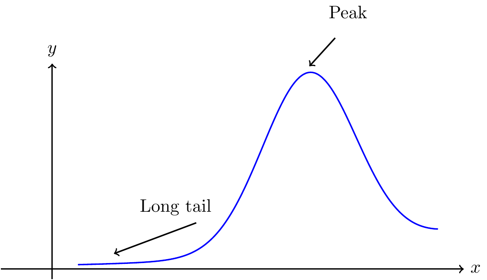
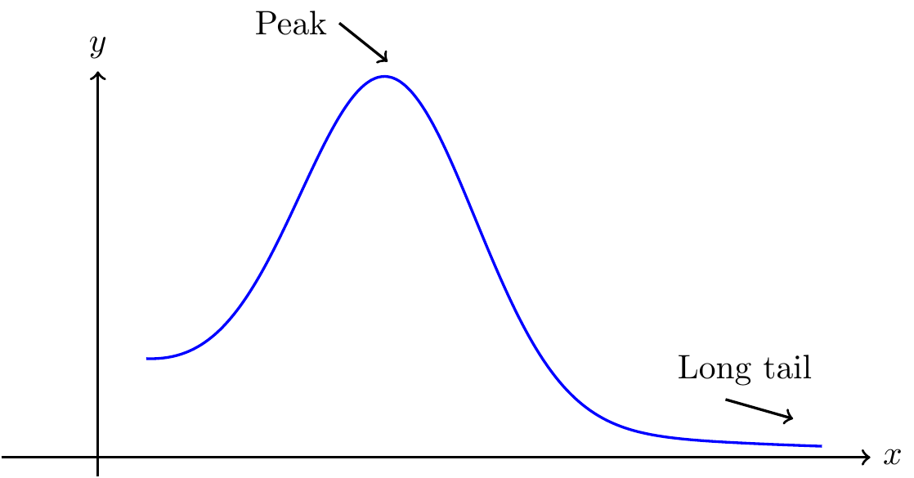
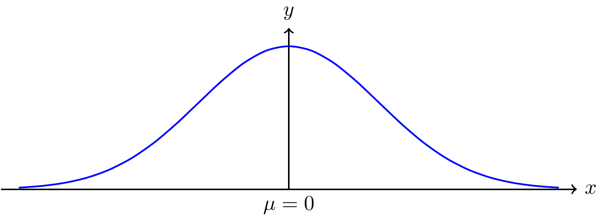
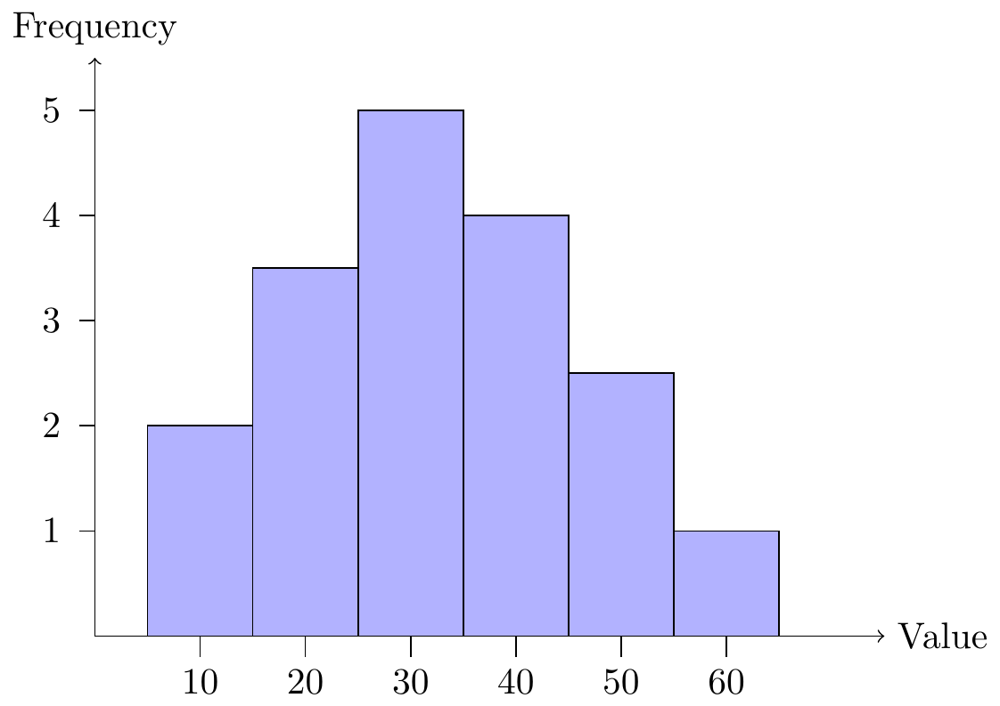
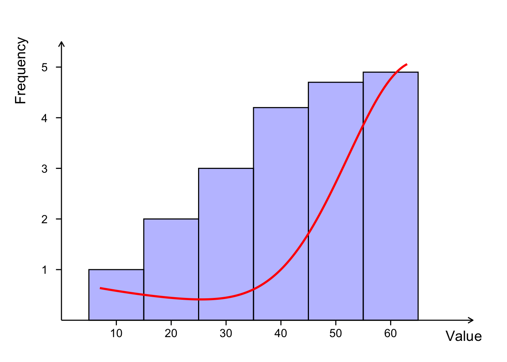
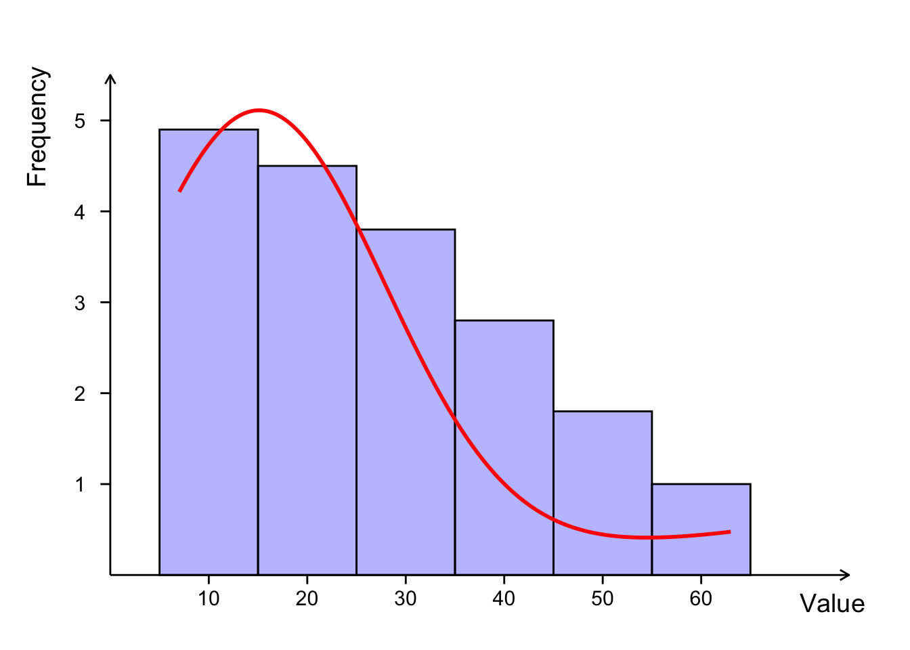
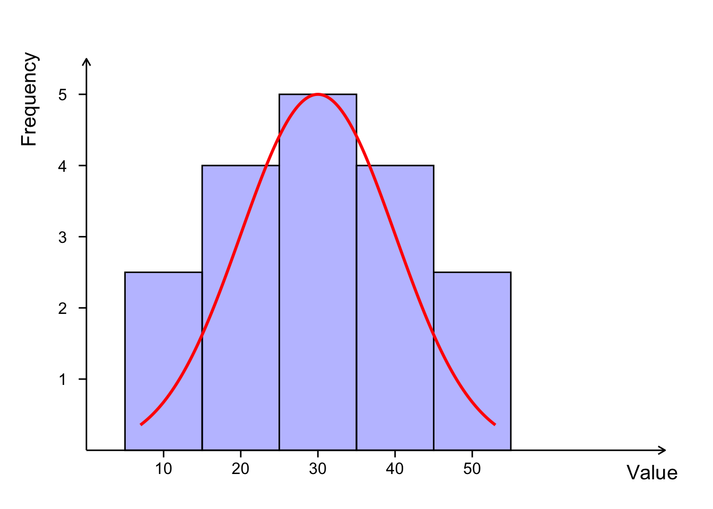

Chapter 3 Descriptive Statistics
3.1 Representing Data
Data comes to us in the form of (i.e. measurements) which we write symbolically as a lower case letter along with a subscript. For example, suppose we have taken a total of \(n\) observations. We have observation 1, observation 2, observation 3, \(\ldots\), observation \(n-1\) and observation \(n\). By letting \(x\) represent an observation, all \(n\) observations can be represented as:
\[x_1,~x_2,~ \ldots ,~ x_n\]
where \(x_i\) is an individual observation, and the index \(i=1, \ldots , n\). Here \(n\) is referred to as the . We can also represent this data in condensed form as:
\[x_i:\ i=1, \ldots , n\]
or in tabular form as:
| Index | 1 | 2 | \(\ldots\) | \(n\) |
|---|---|---|---|---|
| Observation | \(x_1\) | \(x_2\) | \(\ldots\) | \(x_2\) |
3.2 Numerical Measures
The most common numerical measures of central tendency are the mean, median, and mode. These measures summarize a set of data by identifying the central point within that data.
The (or more precisely the arithmetic mean) of a data set is obtained by adding up all of the observations and dividing by the sample size (number of observations). The mean is the typical average that we are all familiar with. We use the symbol \(\bar{x}\) to represent the sample mean.
3.2.1 Mean
Definition 3.1 (Mean) Let \(x_{1}, ~x_{2}, ~x_{3}, ~\ldots , ~x_{n}\) represent a sample of \(n\) observations. The sample mean is defined as: \[\bar{x} = \frac{ \displaystyle\sum_{i = 1}^{n} x_{i} }{n} = \frac{ x_{1} + x_{2} + \dots + x _{n} }{n}\]
3.2.2 Median
Definition 3.2 (Median) The median is the middle value of a data set when the observations are arranged in ascending order.
The calculation of the median depends on whether the sample size is odd or even. If the sample size is odd, the median is the middle observation. If the sample size is even, the median is the average of the two middle observations.
Consider \(n\) ordered observations \(x_{(1)},x_{(2)},~\cdots~,x_{(n)}\).
- If \(n\) is odd \[\text{Median} = \text{observation} \> \left( \frac{n + 1}{2} \right) \]
- If \(n\) is even, \[\text{Median} = \text{average of observation} ~ \left(\frac{n}{2} \right) ~\text{and observation} ~ \left( \frac{n}{2} + 1 \right)\]
3.2.3 Mode
Definition 3.3 (Mode) The mode is the most frequently occurring observation in a data set.
We are als interested in how the data is spread out or dispersed. The most common numerical measures of the dispersion are the range, variance, and standard deviation. These measures summarize a set of data by identifying the spread or variability within that data.
3.2.4 Variance
Definition 3.4 (Variance) The sample variance is the average squared deviation of each observation from the sample mean.
Let \(x_{1}, ~x_{2}, ~x_{3}, ~\ldots , ~x_{n}\) represent a sample of \(n\) observations. The sample Variance is defined as: \[s^{2} = \frac{ \displaystyle\sum_{i=1}^{n} (x_{i} - \bar{x})^{2} }{n - 1} = \frac{ (x_{1} - \bar{x})^{2} + (x_{2} - \bar{x})^{2} + \ldots + (x_{n} - \bar{x})^{2} }{n-1}\] where \(\bar{x}\) is the sample mean in Definition 3.1.
In the Definition 3.4, we divide by \(n-1\) instead of \(n\) since we are estimating the value of the population variance using sample data, and this calculation already includes utilizing the sample mean \(\bar{x}\) which itself is an estimate of the population mean \(\mu\). This division by \(n-1\) is known as Bessel’s correction.
Another reason for dividing by \(n-1\) is because the sample variance is an unbiased estimator of the population variance, which is a topic covered in STA260 and beyond the scope of this course.
In the calculation of the sample variance, notice each term is squared, which means that the variance is always a non-negative number. When this occurs, the units of the variance are the square of the units of the original data. To return to the original units, we take the square root of the variance to obtain the standard deviation.
3.2.5 Standard Deviation
Definition 3.5 (Standard Deviation) Let \(x_{1}, x_{2}, ~x_{3}, ~\ldots , ~x_{n}\) represent a sample of \(n\) observations. The sample standard deviation is defined as: \[s = + \sqrt{s^{2}}\] where \(s^{2}\) is the sample variance in Definition 3.4.
When we analyze data we typically describe the data in terms of the mean and standard deviation as the units are the same. However, the calculation of the sample variance is an important intermediate step.
One of the measures of central tendency and dispersion on their own will not give as a complete picture of the data, however when analyzed collectively, we are able to get a better overall understanding of the data.
3.2.6 Range
The range is the difference between the largest and smallest observations in a data set.
Definition 3.5 (Standard Deviation) Let \(x_{1}, ~x_{2}, ~x_{3}, ~\ldots , ~x_{n}\) represent a sample of \(n\) observations. The range is \[\text{Range} = \max(x_{1}, x_{2}, ~x_{3}, ~\ldots , ~x_{n}) - \min(x_{1}, x_{2}, ~x_{3}, ~\ldots , ~x_{n}) \]
3.2.7 Percentiles
Definition 3.6 (Percentile) In an ordered data set, the \(p^{th}\) percentile is the value such that \(p\%\) of all observations lie below it.
Percentiles are a value that are relative to the rest of the data.
Example 3.1 A class writes a difficult test and a student obtained a mark of 70% on this test. Although 72% is a B-, since the test was difficult, this may be a good score. In fact, the student who scored 72% is in the \(90^{th}\) percentile for this test. This means that they scored better than 90% of the rest of the class.
3.2.8 Quartiles
Quartiles are special cases of percentiles.
Definition 3.7 (Quartiles) In an ordered data set, quartiles are three values which divide the data into four groups such that each group consists of one fourth of the data. There three quartiles are the:
- First Quartile (Q\(_{1}\)) : A value such that 25% (i.e. a quarter) of all observations lie below it.
- Second Quartile (Q\(_{2}\)) : A value such that 50% (i.e. two quarters) of all observations lie below it.
- Third Quartile (Q\(_{3}\)) : A value such that 75% (i.e. three quarters) of all observations lie below it.
We work with quartiles since they are provide an intutitive way to partition data into quarters, and quartiles are also used in graphical summaries discussed in Section 3.3.
A measure of dispersion involving quartiles is the inter-quartils range (IQR).
Definition 3.8 (Interquartile Range) The interquartile range (IQR) is the difference between the third quartile and the first quartile. \[\text{IQR} = Q_{1} - Q_{3}\] where \(Q_{1}\) and \(Q_{3}\) are the first and third quartiles respectively in Definition 3.7.
3.3 Grapchical Techniques
Raw values on their own can be difficult to interpret, especially with very large data sets. Graphical representations can be very useful for representing information. When implemented correctly, graphical plots can provide more intuitive and direct method to interpret information being analyzed.
We begin this section by introducing a term to describe the shape of a distribution of data.
Definition 3.9 (Skewness) Skewness refers to such a measure of symmetry or lack of symmetry in the distribution of data.
We can describe data as being left skewed, right skewed or symmetric. If the data is described as symmetric, this implies that most observations are concentrated around the mean and tail off fairly evenly on both sides of the mean. If the data is described as right skewed, this implies that more observations are concentrated on smaller values and we observe a longer tail to the right side of the mean. If the data is described as left skewed, this implies that more observations are concentrated on large values and we observe a longer tail to the left side of the mean. We also may have data that is bimodal, which means that there are two distinct peaks in the distribution of the data.
Remark. Right skewed data is is also referred to as positively skewed and left skewed data is is also referred to as negatively skewed.
Figures @ref{fig:LeftSkewDensity} @ref{fig:RightSkewDensity} and @ref{fig:SymmDensity} illustrate the three types of skewness.

Figure 3.1: An illustration of a left (negative) skewed distribution.

Figure 3.2: An illustration of a right (positive) skewed distribution.

Figure 3.3: An illustration of symmetric distribution. Area under this curve on the left hand side of \(\mu = 0\) is same as the area on the right hand side under the curve.
Data sets can have points in it which may be unusual or unexpected. These terms are called outliers.
Definition 3.10 (Outlier) An outlier is an unusual data point which appears to lies outside the overall pattern of the rest of the data.
In other words, an outlier falls outside the range in which we would expect to see “typical” data values. Outliers may be present in data for a variety of reasons such as transcription error, measurement error, or we may have just measured a rare and unusual observation. In any case it is not a good practice to simply ignore outliers. All outliers should be investigated before deciding whether the observation should be included in data analysis or discarded.
3.3.1 Histograms
Histograms and boxplots are useful tools which can allow us to visually determine the skewness of a distribution. By noting skewness, we get even more information about our data. Note however that we may not always be able to determine skewness by visually observing a histogram. A histogram is similar to a bar chart with the distinction that his- tograms can only be created for quantitative data.
The width of the bars does not have any numerical meaning for bar charts, however bar width matters for histograms. They are an important factor in the creation of histograms. Interval width selection (or bin size selection) is an advanced topic that can be studied ex- tensively and there are several rules available to select interval widths. However for the scope of this course we will keep things simple and allow the reader to intuitively choose bin size. After constructing a histogram, we can change the interval widths until we feel that we have a picture that is a good representation of our data.
A histogram is constructed by dividing the range of the data into intervals (or bins) and counting how many observations fall into each interval. The intervals are usually of equal width, but this is not a requirement.
| Class Interval | Frequency | Relative Freq. | Cumulative Freq. | Cumulative Relative Freq. | |
|---|---|---|---|---|---|
| \([a_{1}, b_{1})\) | \(f_{1}\) | \(r_{1} = f_{1} / F\) | \(f_{1}\) | \(r_{1}\) | |
| \([a_{2}, b_{2})\) | \(f_{2}\) | \(r_{2} = f_{2} / F\) | \(f_{1} + f_{2}\) | \(r_{1} + r_{2}\) | |
| \([a_{3}, b_{3})\) | \(f_{3}\) | \(r_{3} = f_{3} / F\) | \(f_{1} + f_{2} + f_{3}\) | \(r_{1} + r_{2} + r_{3}\) | |
| \(\vdots\) | \(\vdots\) | \(\vdots\) | \(\vdots\) | \(\vdots\) | |
| \([a_{m}, b_{m}]\) | \(f_{m}\) | \(r_{m} = f_{m} / F\) | \(f_{1} + \ldots + f_{m} = F\) | \(r_{1} + \ldots + r_{m} = 1\) | |
| \(F = \displaystyle\sum_{i=1}^{m} f_{i}\) | \(1\) |
The histogram is then created by plotting the intervals on the \(x\)-axis and the frequency or relative frequency of observations in each interval on the \(y\)-axis. When frequency is plotted on the \(y\)-axis, the histogram is referred to as a frequency histogram and when relative frequency is plotted on the \(y\)-axis, the histogram is referred to as a relative frequency histogram.
Remark. When we use the term histogram, we often refer to a frequency histogram unless otherwise specified.
An example of a histogram is shown in Figure 3.4.

Figure 3.4: An illustration of a histogram.
Figures @ref(fig:HistExampleLeft), @ref(fig:HistExampleRight), and @ref(fig:HistExampleSymm) illustrate the concept of skewness in histograms. The histograms show how the distribution of data can be skewed to the left, skewed to the right, or symmetric.

Figure 3.5: An illustration of a histogram to have a left (or negative) skew probability distribution.

Figure 3.6: An illustration of a histogram to have a right (or positive) skew probability distribution.

Figure 3.7: An illustration of a histogram to have a symmetric probability distribution.
3.3.2 Boxplots
Boxplots are another visual aid we can use to present and interpret data. They are one of the most simple graphical techniques to analyze visually and are therefore usually relatively immediate to interpret. Boxplots are also known as box-and-whisker plots since they consists of figures resembling boxes along with a series of lines which we refer to as whiskers. The whiskers represent the quartiles as well as special values which we refer to as the lower whisker and the upper whisker.
Definition 3.11 (Upper and Lower Whiskers) Let \(Q_{1}\), \(Q_{3}\) and \(IQR\) represent the first quartile, third quartile and interquartile range respectively as defined in 3.7 and 3.8 respectively. Then, \[ \text{Lower Whisker} ~ = ~ Q_{1} - 1.5 \times IQR \] \[ \text{Upper Whisker} ~ = ~ Q_{3} + 1.5 \times IQR \]
The box in a boxplot is divided into two parts, the lower and upper quartiles. The lower quartile is represented by the bottom of the box and the upper quartile is represented by the top of the box. The line inside the box represents the median of the data set. Box plots can be used to to get a sense of a data set.

Figure 3.8: An illustration of an annotated box-plot with whiskers and potential outliers.
Boxplots can also efficiently be used to compare multiple distributions and highlight skewness, spread, and outliers from each of them. If the median cuts the box with upper area smaller than lower area, then we say that box-plot with left skew probability distribution. Or, if the median cuts the box with upper area larger than lower area, then we say that box-plot with right skew probability distribution. Otherwise, if the median cuts the box with upper area equal to lower area, then we say that box-plot with symmetric probability distribution.

Figure 3.9: Box-plots showing negative skew, positive skew, and symmetry.